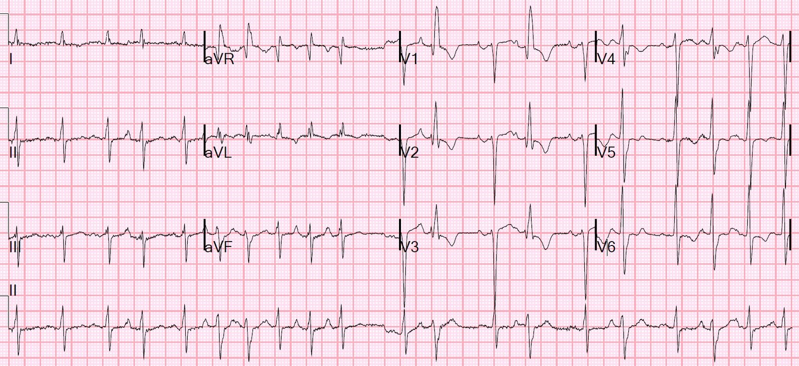
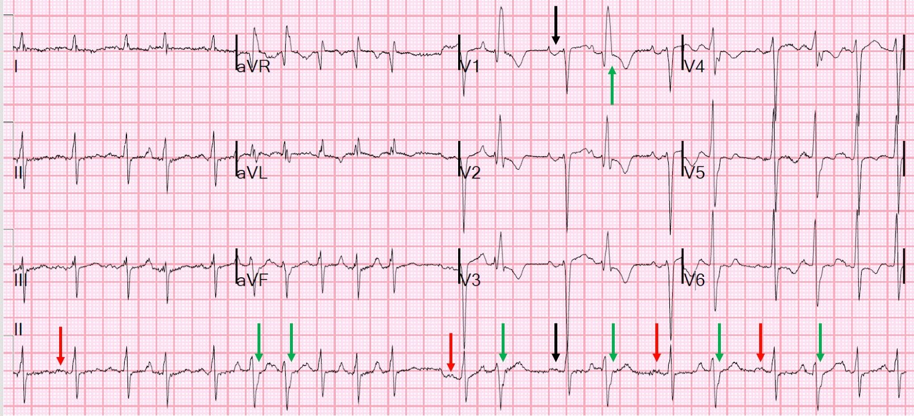
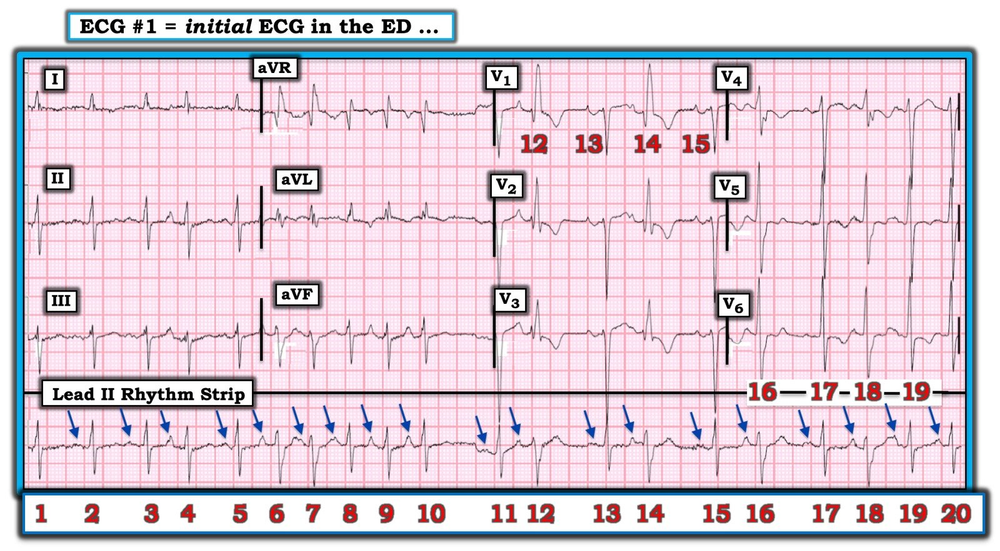

05/01/2020 — Rung nhĩ? Nhịp nhanh nhĩ đa ổ? Đừng xem kết quả đọc của máy tính cho đến SAU KHI bạn đã tự diễn giải!
Bản dịch tiếng Việt của bài "Atrial fibrillation? Multifocal Atrial Tachycardia? Don’t look at computer read until AFTER you interpret!" – Dr. Smith’s ECG Blog. Giữ nguyên toàn bộ 3 hình ảnh của bản gốc.
Bệnh nhân 60 mấy tuổi, có tiền sử bệnh phổi tắc nghẽn mạn tính (COPD) và suy tim phân suất tống máu giảm (HFrEF) (EF 25%), đến viện vì khó thở (SOB) và đau ngực.
Đây là điện tâm đồ:


Bạn nghĩ gì? (Kết quả đọc bằng máy tính ở bên dưới).
= = =
Đây là kết quả đọc bằng máy tính:
- Rung nhĩ đáp ứng thất nhanh — kèm dẫn truyền lệch hướng hoặc phức bộ thất sớm.
- Trục lệch trái (trục QRS vượt quá -30 độ).
- Bất thường ST và sóng T không đặc hiệu.
= = =
Bác sĩ đọc lại (overread) đã xác nhận chẩn đoán này, và chẩn đoán đó là sai.
- Đây không phải là rung nhĩ.
- Nhịp đúng là không đều hoàn toàn (irregularly irregular), vì vậy phải cân nhắc rung nhĩ.
= = =
Có 5 nhịp khác cũng không đều hoàn toàn, dù rung nhĩ cho đến nay vẫn là thường gặp nhất:
- 1. Nhịp nhanh nhĩ đa ổ (MAT).
- 2. Nhịp xoang kèm PAC đa ổ.
- 3. Nhịp xoang kèm PVC đa ổ.
- 4. VT đa dạng (luôn có phức bộ rộng, nên không áp dụng ở đây).
- 5. Rung nhĩ kèm WPW (cũng có phức bộ rộng)
= = =
Nhịp này KHÔNG phải rung nhĩ, như được minh họa trong bản có chú thích này:


Tần số là 120. Nên tìm các nhát xoang bằng cách tìm sóng P dạng lên-xuống ở V1. Chúng ta tìm được hai nhát (mũi tên đen, rồi thêm một nhát nữa 2 nhát sau đó). Sau đó xác nhận đó là nhát xoang bằng cách dóng thẳng xuống chuyển đạo II ở dải dưới cùng.
- Chúng ta tìm thấy sóng P điển hình tương ứng ở chuyển đạo II, xác nhận nhịp xoang (mũi tên đen ở dưới cùng).
- Sau đó tìm các sóng P tương tự khác (xem các mũi tên đỏ).
- Sau đó nhận thấy có nhiều hình thái sóng P khác, và một số sóng đến sớm đến mức QRS bị dẫn truyền lệch hướng, với hình dạng RBBB vì nhánh phải thường có thời kỳ trơ dài hơn (các mũi tên xanh lá).
- Nút xoang, khi không bị ngắt quãng, phát xung muộn hơn 600 ms sau nhát nhĩ trước đó, nên KHÔNG có nhịp nhanh xoang.
= = =
Có thể gọi đây là nhịp nhanh nhĩ đa ổ (MAT), nhưng vì có những nhát xoang chắc chắn với tần số không nhanh, đây là nhịp xoang kèm các nhát nhĩ sớm đa ổ.
- MAT có ít nhất 3 hình thái sóng P khác biệt, nhưng không có một ổ tạo nhịp chiếm ưu thế duy nhất (tức là không có nhịp xoang nền).
Chẩn đoán nhịp: Nhịp xoang kèm các nhát nhĩ sớm đa ổ (PAC hoặc PAB), nhiều nhát dẫn truyền lệch hướng.
= = =
Thêm những điểm cần học:
Đừng tin vào thuật toán máy tính để chẩn đoán có hay không có rung nhĩ. Nó có thể dẫn đến chẩn đoán âm tính giả hoặc dương tính giả, và dẫn đến việc không dùng thuốc chống đông khi cần, hoặc dùng thuốc chống đông không phù hợp. Xem bên dưới điều này đã được ghi nhận như thế nào.
Đây là một ví dụ trong đó máy tính không chẩn đoán được rung nhĩ, với hậu quả thảm khốc:
Máy tính thường không chẩn đoán được rung nhĩ trong nhịp tạo nhịp thất, và điều đó có thể gây thảm họa
Smith SW và cs. A deep neural network for 12-lead electrocardiogram interpretation outperforms a conventional algorithm, and its physician over-read, in the diagnosis of atrial fibrillation. IJC Heart and Vasculature 25(2019). — BẤM VÀO ĐÂY — để xem toàn văn.
= = =
Đây là các đoạn trích từ bài báo:
Trích phần Mở đầu:
Trong các chẩn đoán nhịp, rung nhĩ (AF) đặc biệt quan trọng đối với việc xử trí phù hợp. Tuy nhiên, kết quả đọc tự động và kết quả bác sĩ đọc lại bị sai là thường gặp và đã được chứng minh là ảnh hưởng bất lợi đến việc xử trí bệnh nhân [1]. Một nghiên cứu trên 2298 điện tâm đồ của 1085 bệnh nhân có kết quả đọc bằng máy tính là AF cho thấy ở 442 (19%) điện tâm đồ này, thuộc 382 bệnh nhân (35%), kết quả đọc là sai, và ở 92 trong số 382 bệnh nhân này, bác sĩ đã không sửa lại. Các sai sót này dẫn đến điều trị chống loạn nhịp và chống đông không cần thiết ở 39 bệnh nhân, làm xét nghiệm chẩn đoán không cần thiết ở 90 bệnh nhân, và chẩn đoán cuối cùng sai là AF kịch phát ở 43 bệnh nhân.
Trích phần Bàn luận:
Tuy nhiên, đáng tiếc là các thuật toán máy tính có hiệu năng tầm thường [14]. Khi chính xác, chúng đã được chứng minh là làm tăng độ chính xác của bác sĩ đọc lại, nhưng khi không chính xác, chúng đã được chứng minh là khiến bác sĩ lạc hướng. Điều này đã được chứng minh với bác sĩ nội trú chuyên khoa tim mạch (fellow) [15], với bác sĩ cấp cứu [16], và cả với bác sĩ tim mạch đã được đào tạo đầy đủ, ở những người này sự hiện diện của kết quả đọc tự động dẫn đến độ chính xác thấp hơn vì các lỗi của máy không được sửa lại [17].
Các rối loạn nhịp nhĩ, và đặc biệt là rung nhĩ, thường bị các thuật toán máy tính chẩn đoán sai, rồi sau đó bị cả bác sĩ đọc lại chẩn đoán sai. Shah và Rubin đã nghiên cứu kết quả đọc nhịp bằng máy tính của 2160 điện tâm đồ 12 chuyển đạo, so sánh với 2 bác sĩ tim mạch [18]. Trong số 2112 điện tâm đồ mà máy tính đọc được, độ nhạy và độ đặc hiệu lần lượt là 95% và 66,3% đối với nhịp xoang, và 71% và 95% đối với rung nhĩ. Taggar và cs. ghi nhận máy tính chẩn đoán quá mức (dương tính giả) AF ở 9 đến 19% điện tâm đồ [19]. Hwan Bae và cs. thấy máy tính chẩn đoán thiếu ở 9,3% trong 840 điện tâm đồ AF, và chẩn đoán quá mức ở 11,3%, với 7,8% các chẩn đoán sai không được bác sĩ sửa lại [20]. Trong 2447 điện tâm đồ, Mant và cs. thấy phần mềm diễn giải Biolog có độ nhạy 83,3% và độ đặc hiệu 99%; tuy nhiên, các chuyên gia tham chiếu chỉ bất đồng ở 7 điện tâm đồ (0,27%), điều này gợi ý rằng chỉ những điện tâm đồ không phức tạp được đưa vào [21]. Poon và cs. thấy thuật toán của General Electric (GE) có độ nhạy 90,8% và độ đặc hiệu 98,9% đối với AF, nhưng họ đã loại trừ các trường hợp nhịp tạo nhịp thất (VPR), trong đó nhịp nhĩ nền thường là AF. Chúng tôi không loại trừ VPR, vì nhận diện chính xác AF trong VPR là quan trọng để xác định nguy cơ đột quỵ [22]. Như vậy, cả chẩn đoán quá mức lẫn chẩn đoán thiếu AF đều là những vấn đề đã được thừa nhận rộng rãi trong điện tâm đồ được đọc bằng máy tính, và chúng ảnh hưởng bất lợi đến việc xử trí bệnh nhân, hoặc do dùng thuốc chống đông và/hoặc thuốc chống loạn nhịp không phù hợp, hoặc do điều trị thiếu [1,14]. Trong nghiên cứu của chúng tôi, ngay cả phần bác sĩ đọc lại kết quả của thuật toán Veritas® cũng bất đồng với kết quả diễn giải tham chiếu ở 38 trường hợp (7,6% tổng số trường hợp, và 62% các chẩn đoán sai của Veritas®).
= = =
======================================
BÌNH LUẬN CỦA TÔI, bởi KEN GRAUER, MD (5/1/2020 — Cập nhật cho WordPress ngày 5/2/2026):
Ca này minh họa một số điểm giảng dạy quan trọng. Tôi trình bày lần lượt theo trình tự trong loạt Câu hỏi dưới đây:
- Để rõ ràng, ở Hình 1 — tôi đã in lại và đánh nhãn điện tâm đồ của ca hôm nay.
= = =
Hình 1: Điện tâm đồ của ca hôm nay.


= = =
CÂU HỎI: Có phải là “lỗi” của máy tính khi chẩn đoán nhịp đúng đã bị bác sĩ lâm sàng phụ trách bỏ sót?
= = =
= = =
TRẢ LỜI CỦA TÔI:
Vấn đề liệu kết quả đọc điện tâm đồ bằng máy tính có phải “là thủ phạm” của một chẩn đoán điện tâm đồ không chính xác hay không đã được đề cập rất nhiều lần trên blog này.
- ĐIỂM THEN CHỐT (PEARL) #1: Việc bỏ sót một chẩn đoán điện tâm đồ không phải là “lỗi” của máy tính. Thay vào đó — đó là lỗi của người thầy thuốc chấp nhận kết quả đọc của máy tính mà không tự mình diễn giải điện tâm đồ một cách độc lập trước khi xem máy tính nói gì (BẤM VÀO ĐÂY — để xem “Quan điểm của tôi” về cách sử dụng tối ưu kết quả đọc bằng máy tính).
- Quan điểm của tôi có thể khác người khác — ở chỗ, là một bác sĩ điều trị chính được giao đọc lại điện tâm đồ cho rất nhiều người thầy thuốc — tôi rất thích kết quả đọc bằng máy tính một khi tôi đã học được cách hiểu rõ máy tính có thể làm gì và không thể làm gì. Đó là vì máy tính đã tiết kiệm cho tôi RẤT NHIỀU thời gian (!) nhờ giúp tôi đọc nhanh hơn rất nhiều, khi tôi phải đối mặt với cả một chồng điện tâm đồ lớn trước mặt cần diễn giải. Nhưng với bất kỳ ai đã đọc ít hơn nhiều nghìn bản ghi — điều bắt buộc là đừng thậm chí nhìn vào kết quả đọc của máy tính cho đến sau khi CHÍNH BẠN đã tự mình diễn giải điện tâm đồ một cách độc lập. Không làm theo lời khuyên này chắc chắn sẽ dẫn đến bỏ sót các nhồi máu cơ tim cấp kín đáo — và, đặc biệt sẽ dẫn đến chẩn đoán sai rất nhiều rối loạn nhịp tim (như đã xảy ra trong ca này).
- ĐIỀU CỐT LÕI: Đừng đổ lỗi cho máy tính về sai lầm CỦA BẠN! Đừng nhìn vào kết quả đọc của máy tính cho đến sau khi chính bạn đã diễn giải bản ghi!
= = =
CÂU HỎI: Vì sao MAT (nhịp nhanh nhĩ đa ổ — Multifocal Atrial Tachycardia) lại hay bị bỏ sót đến vậy?
- Làm thế nào để bạn tránh bỏ sót rối loạn nhịp này?
= = =
= = =
TRẢ LỜI CỦA TÔI:
Theo kinh nghiệm của tôi, MAT là rối loạn nhịp tim bị bỏ sót nhiều thứ 2 (chỉ sau cuồng nhĩ). Lý do của việc bỏ sót rối loạn nhịp này rất đơn giản:
- MAT thực sự không phải là một nhịp thường gặp. AFib là nhịp không đều hoàn toàn hay bị nhầm với MAT nhất — và, AFib thường gặp hơn MAT thực sự rất, rất, rất nhiều.
- Không phải lúc nào cũng thấy được sóng P rõ ràng, dễ nhận diện ở từng chuyển đạo trong 12 chuyển đạo của điện tâm đồ. Vì vậy — NẾU dải nhịp một chuyển đạo mà bạn dùng để theo dõi tim không cho thấy rõ các sóng P có thể nhận diện — thì RẤT DỄ nhầm nhịp này với AFib.
- ĐIỂM THEN CHỐT (PEARL) #2 — Hãy nhớ rằng “12 chuyển đạo tốt hơn Một”. Nhiều rối loạn nhịp sẽ tỏ ra không thể diễn giải được — NẾU chỉ dùng 1 hoặc vài chuyển đạo. HÃY GHI điện tâm đồ 12 chuyển đạo!
- Người thầy thuốc QUÊN “Dựa vào xác suất”. MAT hầu như luôn xảy ra trong một trong 2 bối cảnh lâm sàng thường gặp: i) Bệnh phổi nặng (tức là COPD, hen phế quản lâu năm; tăng áp phổi); — hoặc, ii) Bệnh nhân bệnh cấp tính nặng có bệnh đa hệ cơ quan (tức là bệnh nhân nhiễm khuẩn huyết; sốc; rối loạn điện giải và/hoặc rối loạn toan-kiềm).
- ĐIỂM THEN CHỐT (PEARL) #3 — NẾU bệnh nhân của bạn có một trong 2 bối cảnh lâm sàng này (ở gạch đầu dòng trên) — và nhịp tim không đều — thì hãy TÌM KỸ khả năng MAT! Bạn sẽ không bỏ sót MAT — NẾU bạn đang tìm nó!
- Vì có quá nhiều nhiễu đường nền trên điện tâm đồ #1 — tôi đã không nhận ra ngay rằng có nhiều sóng P khác nhau! Dù vậy — tôi KHÔNG HỀ nghi ngờ rằng các sóng lệch dương đứng trước các nhát #4, 6, 9, 14, 16 và 18 đều chắc chắn là sóng P (các mũi tên XANH DƯƠNG trước các nhát này trong Hình 1). Xem xét kỹ hơn phía trước các phức bộ QRS còn lại khi đó gợi ý mạnh rằng tất cả các nhát trong bản ghi này đều có sóng P đi trước (đặc biệt là vì hình thái sóng P và khoảng PR đứng trước các nhát #2, 11, 13, 15 và 17 đều giống hệt nhau).
- Bằng chứng ủng hộ rằng chúng ta đang đối mặt với một rối loạn nhịp giống MAT trong ca này đến từ bệnh sử (tức là đã biết có COPD) + các dấu hiệu điện tâm đồ bổ sung phù hợp với bệnh phổi (tức là sóng S tồn tại kéo dài đến tận chuyển đạo V6 + dấu hiệu sóng P cao và nhọn ở các chuyển đạo thành dưới đối với nhiều sóng P trong dải nhịp dài chuyển đạo II).
= = =
CÂU HỎI: Có sự khác biệt nào giữa nhịp xoang kèm nhiều PAC so với MAT?
= = =
= = =
TRẢ LỜI CỦA TÔI:
Theo tôi — việc cố gắng phân biệt giữa nhịp xoang kèm nhiều PAC có hình dạng khác nhau với MAT vừa mang tính hàn lâm vừa không quan trọng về mặt lâm sàng (và cũng thường là không thể làm được). Đó là vì: i) Chính các bối cảnh lâm sàng đó (mà tôi vừa nêu ở trên) là những nguyên nhân thường gặp của cả hai rối loạn nhịp này; — và, ii) Điều trị lâm sàng (tức là xác định và điều trị nguyên nhân nền gây ra rối loạn nhịp) là NHƯ NHAU cho cả hai tình trạng.
- ĐIỂM THEN CHỐT (PEARL) #4 — Trong “đời thực” — thường KHÔNG có một “điểm cắt” rõ ràng để phân biệt giữa nhịp nhanh xoang kèm nhiều PAC có hình dạng khác nhau với MAT. Thay vào đó — có cả một PHỔ các rối loạn nhịp trong “họ” này, trong đó có nhiều khả năng cho các nhịp SVT không đều “trung gian” biểu hiện hình thái sóng P thay đổi. Ví dụ — những nhịp mà về các mặt khác gợi ý là “MAT” thì không phải lúc nào cũng “nhanh”. Hơn nữa — điểm chuyển tiếp từ nhịp xoang kèm nhiều PAC có hình dạng khác nhau sang “MAT” thường khó nắm bắt. (BẤM VÀO ĐÂY — để xem thêm “Quan điểm của tôi” về “phổ” của MAT).
- Theo ý kiến của tôi — nhịp ở Hình 1 là một trong những nhịp SVT không đều “trung gian” như vậy, mà xét về mọi mặt thực tế thì hoạt động như MAT. Đó là vì mặc dù có một số sóng P quả thực gợi ý một cơ chế xoang nền (tức là các sóng P đứng trước nhát #2, 11, 13, 15 và 17 có hình thái tương tự nhau, trông giống sóng P xoang): — i) Tôi đếm được ít nhất 9 hình thái sóng P khác nhau trên điện tâm đồ #1; — và, ii) TẦN SỐ trung bình của sóng P trên dải nhịp 10 giây của điện tâm đồ #1 là trên 115/phút (và tần số nhĩ nhanh hơn thế này nhiều đối với 8 sóng P có hình dạng khác nhau xuất hiện liên–tiếp–nhau từ nhát #3 đến nhát #9).
- LƯU Ý (Vượt ra ngoài phần cốt lõi): — Có khả năng là các nhát được cho là xoang trên điện tâm đồ #1 (tức là nhát #2, 11, 13, 15 và 17) không nhất thiết chậm như chúng có vẻ trên bản ghi này. Với mức nhiễu đường nền có trên bản ghi này — và do chưa lần nào thấy 2 nhát dẫn truyền từ xoang liên tiếp nhau — chúng ta đơn giản là không biết một “sóng ST-T bình thường” sẽ trông như thế nào. Khi có rất nhiều PAC (nhiều PAC trong số đó dẫn truyền lệch hướng) — thường sẽ cũng có các PAC không dẫn truyền — và với mức nhiễu nhiều như thế này thì không thể đánh giá đầy đủ hình thái sóng ST-T của những nhát ở đầu mỗi khoảng ngưng tương đối để tìm khả năng có sóng P không dẫn truyền bị ẩn. Việc khoảng R-R đứng trước mỗi nhát trong 5 nhát được cho là xoang này đều khác nhau ủng hộ giả thiết rằng có một điều gì khác (tức là có thể một hoặc nhiều PAC bị blốc) có thể giải thích cho các khoảng R-R đứng trước thay đổi này. NẾU đúng là như vậy — thì chúng ta thực sự có hoạt động nhĩ không đều hoàn toàn + thay đổi liên tục + nhanh. Chúng ta chỉ không thể xác định chắc chắn điều này từ bản ghi đầy nhiễu này.
- Dù vậy — KHÔNG điều nào trong số này có ý nghĩa về mặt lâm sàng! Bệnh nhân trong ca này đến khám vì khó thở và đau ngực. Với nhịp nhanh đáng kể và nhịp SVT không đều “trung gian” này (bất kể bạn gọi nó là gì) — bệnh phổi cấp gần như chắc chắn là một nguyên nhân góp phần quan trọng (nếu không phải là nguyên nhân duy nhất) gây ra rối loạn nhịp nhanh này. MẤU CHỐT để giúp bệnh nhân này khá hơn chắc chắn sẽ bao gồm tối ưu hóa chức năng phổi. Rất có khả năng là dù nhịp SVT không đều thú vị này có là gì đi nữa — nó sẽ biến mất một khi bạn cải thiện tình trạng phổi!
= = =
CÂU HỎI: BẠN CHẮC CHẮN ĐẾN MỨC NÀO rằng các nhát rộng trên điện tâm đồ #1 là dẫn truyền lệch hướng (và không phải PVC)? BẠN chắc chắn — 50% — 75% — 90% hay 100%?
- NẾU bạn chắc chắn 100% — LÀM SAO bạn có thể chắc đến thế?
= = =
= = =
TRẢ LỜI CỦA TÔI:
Tôi chắc chắn 1.000% rằng tất cả các nhát rộng hơn (trông bất thường hơn) trên điện tâm đồ #1 đều là các nhát trên thất dẫn truyền lệch hướng.
ĐIỂM THEN CHỐT (PEARL) #5 — Ngoài việc xem dải nhịp dài chuyển đạo II — cần tham chiếu từng chuyển đạo trong 12 chuyển đạo trên bản ghi này để nhận diện các nhát bất thường này và nguyên nhân của chúng. Theo tuần tự — đây là cách tiếp cận của tôi:
- Dễ nhận ra nhất là nhát #12 và 14 ở chuyển đạo V1 là rộng hơn (tức là trông bất thường hơn). Các nhát này rõ ràng là dẫn truyền lệch hướng vì: — i) Nhát #12 và 14 có hình thái RBBB rSR’ điển hình hoàn toàn (“tai thỏ” phải cao hơn + sóng S ở V1 đi xuống dưới đường nền); — ii) Cả hai nhát này rõ ràng đều có sóng P đến sớm đứng trước (vì vậy có một “lý do” cho dẫn truyền lệch hướng); — iii) Nếu chúng ta dóng nhát #12 và 14 ở chuyển đạo V1 thẳng xuống nhát #12 và 14 trên dải nhịp dài chuyển đạo II — sóng r nhỏ hơn + sóng S sâu hơn của nhát #12 và 14 ở chuyển đạo II dài này hoàn toàn phù hợp với dẫn truyền lệch hướng kiểu LAHB (vì vậy có blốc hai phân nhánh = dẫn truyền lệch hướng kiểu RBBB/LAHB); — iv) Độ dốc và hướng ban đầu của phần đầu phức bộ QRS ở gần như tất cả các chuyển đạo gần như giống hệt nhau giữa các nhát rộng hơn và các nhát dẫn truyền bình thường (và điều đó không xảy ra với PVC); — và, v) Hiện tượng Ashman (trong đó dẫn truyền lệch hướng xảy ra ở các nhát sau khoảng ngưng tương đối) đều đúng trong suốt dải nhịp dài chuyển đạo II này.
- Một khi đã xác định chắc chắn rằng nhát #12 và 14, với sóng r nhỏ hơn + sóng S sâu hơn ở chuyển đạo II dài, là dẫn truyền lệch hướng — chúng ta BIẾT rằng tất cả các nhát khác trông giống như vậy ở chuyển đạo II cũng phải là dẫn truyền lệch hướng ( = nhát #4, 6, 7, 16 và 18).
- Chúng ta có thể xác nhận rằng nhát #16 và 18 được dẫn truyền lệch hướng kiểu RBBB cũng như kiểu LAHB — vì sóng S của 2 nhát này ở chuyển đạo V6 rõ ràng rộng hơn các sóng S khác ở V6 (đúng như phải thấy khi dẫn truyền lệch hướng kiểu RBBB).
- ĐIỀU CỐT LÕI — Việc nhận ra một rối loạn dẫn truyền điển hình hoàn toàn (tức là như RBBB/LAHB mà chúng ta thấy ở đây) + nhận diện rõ sóng P đến sớm + độ dốc ban đầu và hướng của phần đầu QRS gần như giống hệt nhau ở cả nhát rộng hơn lẫn nhát dẫn truyền bình thường + sự tuân thủ chặt chẽ hiện tượng Ashman trong suốt dải nhịp dài chuyển đạo II này xác nhận dẫn truyền lệch hướng là nguyên nhân của tất cả các phức bộ QRS có hình dạng khác trên bản ghi này.
- BẤM VÀO ĐÂY — để xem minh họa và giải thích chi tiết về hiện tượng Ashman.
- BẤM VÀO ĐÂY — và nghe vài phút tiếp theo của ECG Video này để được giải thích về Những điều cơ bản của dẫn truyền lệch hướng. BẤM VÀO ĐÂY — để xem một ca bệnh minh họa trong đó có nhiều dạng dẫn truyền lệch hướng khác nhau.
= = =
= = =